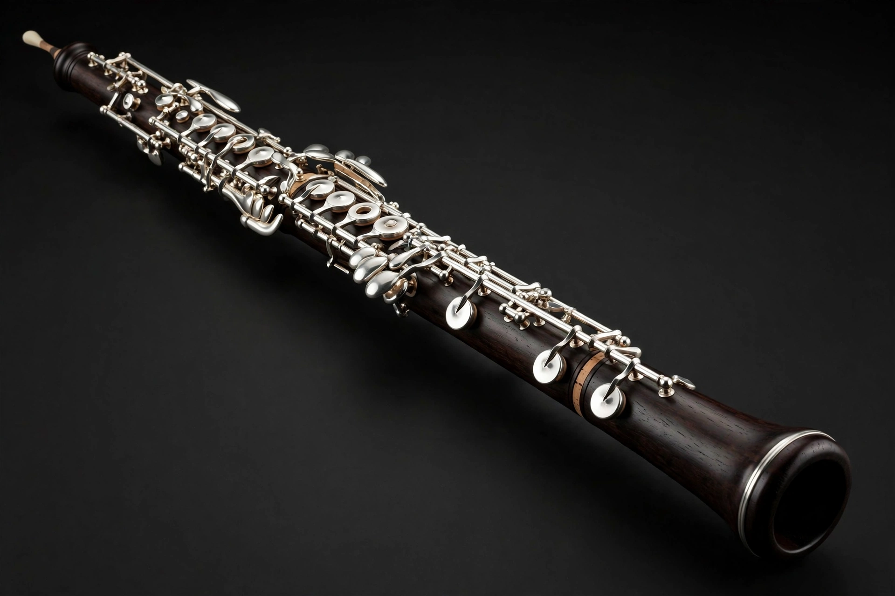

| Oboe | |
|---|---|
| Classification | Wind, woodwind, double reed |
| Range | From B♭3 to about A6 |
| Related instruments | Cor anglais, shawm, bassoon, oboe d'amore |
The oboe (from French hautbois, "high wood") is a double-reed woodwind instrument in the key of C, known for its penetrating, plaintive tone. It developed from the shawm in mid-17th-century France, where the Hotteterre and Philidor families refined its bore and keywork for use at the court of Louis XIV.
The oboe has a conical bore and is usually made of dense hardwood such as grenadilla (African blackwood). Sound is produced by two cane reeds bound together, through which the player blows with considerable pressure. Modern oboes use a complex system of keys based on designs developed in 19th-century France.
The oboe is a principal melodic instrument of the orchestra. By tradition, the oboe gives the tuning note (concert A, typically 440 or 442 Hz) before performances, because its pitch is stable and its tone carries through the ensemble. Notable repertoire includes concertos by Mozart, Strauss, and Vaughan Williams, and celebrated solos such as the Swan theme in Tchaikovsky's Swan Lake and the overture to Rossini's La scala di seta. The family also includes the larger cor anglais (English horn), oboe d'amore, and bass oboe.
See also: Cor anglais, Bassoon, Woodwind instrument.